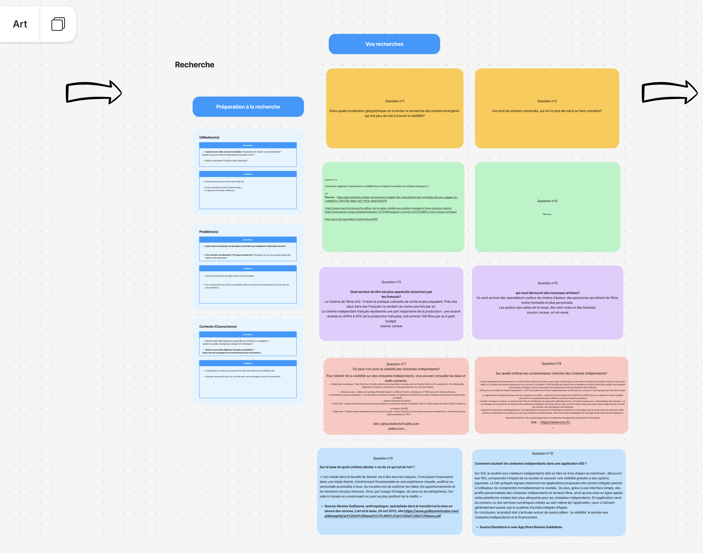
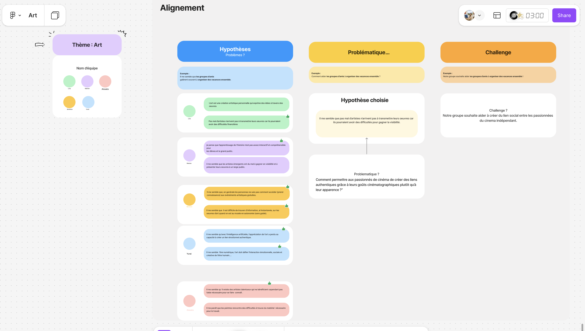
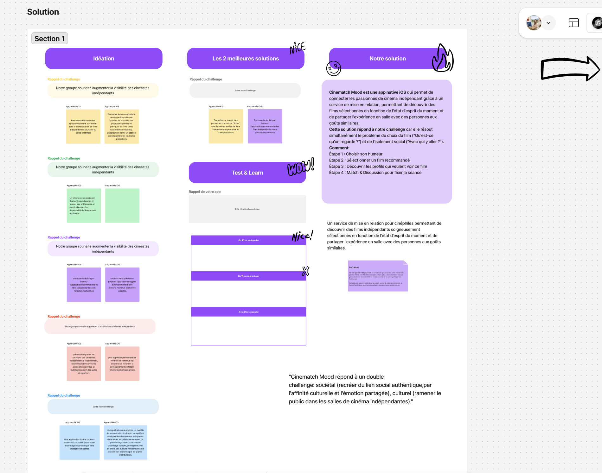
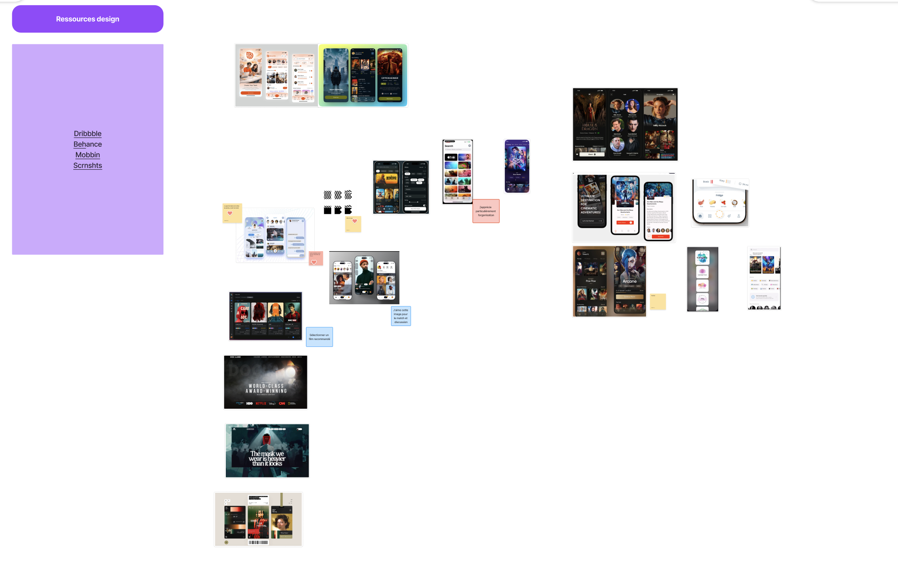

A comprehensive look at how Figma was utilized as the central core for organizing ideas, structured proposals, user solutions, and final prototyping during the iOS app development project at Simplon.
Structuring initial concepts, user research insights, and core feature requirements using collaborative boards in Figma.

Translating requirements into low-fidelity structural layouts and wireframes to map user flows effectively.

Refining interface designs and usability adjustments based on cross-functional feedback and technical feasibility.

High-fidelity, interactive iOS application prototype ready for stakeholder review and developer handoff.
